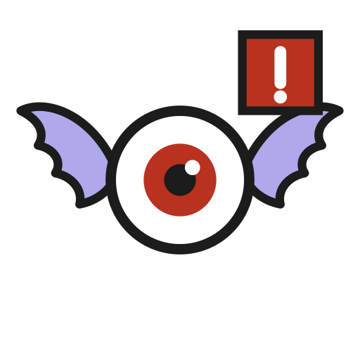
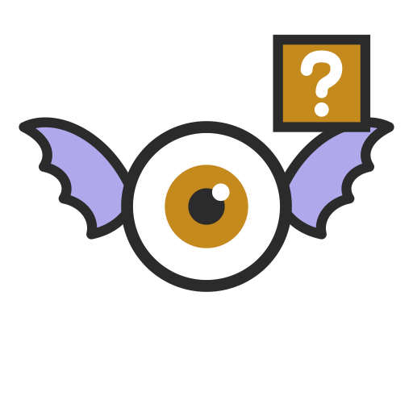
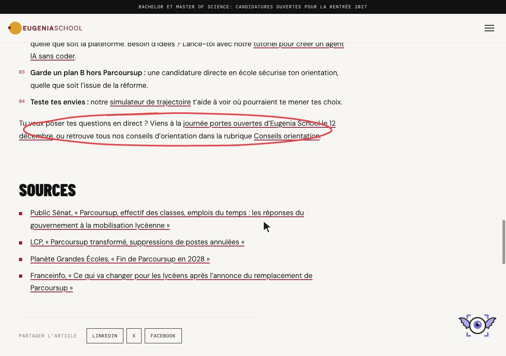
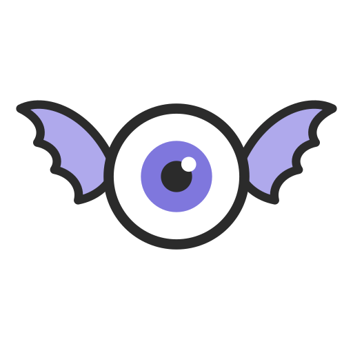

Mode grand public · une adresse suffitElle fait tout sur le site, sans personne pour relire. Un lien de son blog mène à une page introuvable : elle ne le sait pas.

Mode développeur · la documentation devient des testsUne mise en production par semaine, pas de tests de non-régression. Le bouton d'export PDF, amélioré sur une page, s'est dégradé sur les autres.
Node, TypeScript · Chrome (CDP) · H Company : Agents API, Holo · Hugging Face · Obsidian · Supabase · GitHub · Vercel · Railway

Capture du passage réel du 18/11. Montré avec l'accord de l'école ; le lien répondait encore 404 le 18/11 à 16 h 12.
Le MVP : vous installez l'extension, vous envoyez Horama sur un site, il revient avec des défauts prouvés. Et une PR du clone d'Eugenia reçoit sa réponse.
